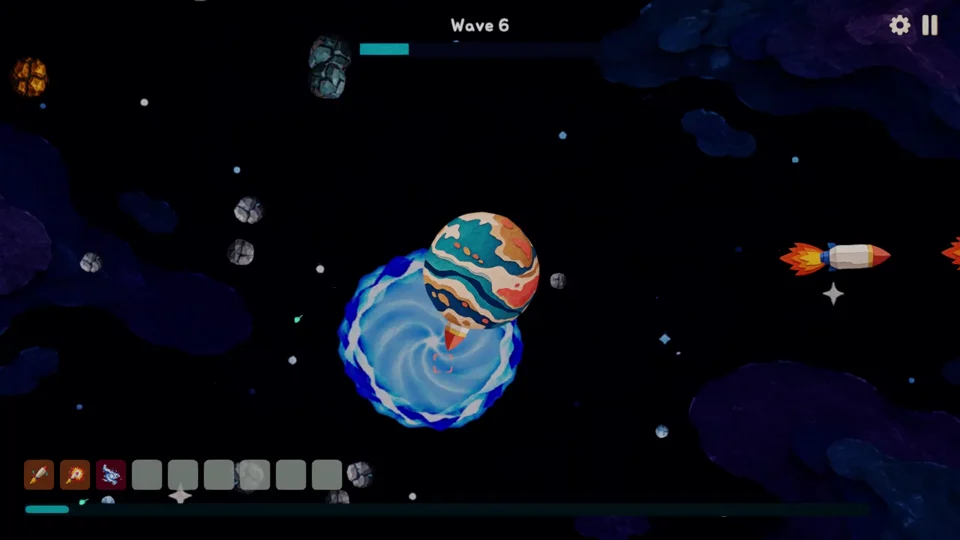

게임 소개
웨이브마다 중앙 행성으로 접근하는 소행성을 미사일로 요격합니다. 전투 중 연구와 증강을 선택하면 공격 방식이 달라져, 같은 미사일로도 다음 웨이브를 다르게 공략할 수 있습니다.
주요 시스템
미사일 발사부터 소행성 충돌 판정과 폭발까지 전투를 구현했습니다. 연구와 증강 선택을 전투에 연결하고, 명중 효과를 추가하는 처리와 기본 폭발을 바꾸는 처리를 분리했습니다.


문제 해결 과정
첫 발사 끊김 발견
직접 플레이하던 중 첫 미사일을 발사할 때 화면이 순간적으로 끊기는 현상을 확인했습니다.
워밍업 전후 비교
이펙트를 미리 준비한 경우와 준비하지 않은 경우의 첫 발사 프레임 시간을 비교하도록 요청했습니다. 측정 범위가 겹쳐 워밍업 효과를 확정하기 어려웠습니다.
전투 오브젝트 풀링 요청
전투 중 반복 생성되는 오브젝트를 재사용하도록 요청했습니다. Codex가 풀링을 구현하고 검수했습니다.
실무 프로젝트
팀 프로젝트
대표작 상세